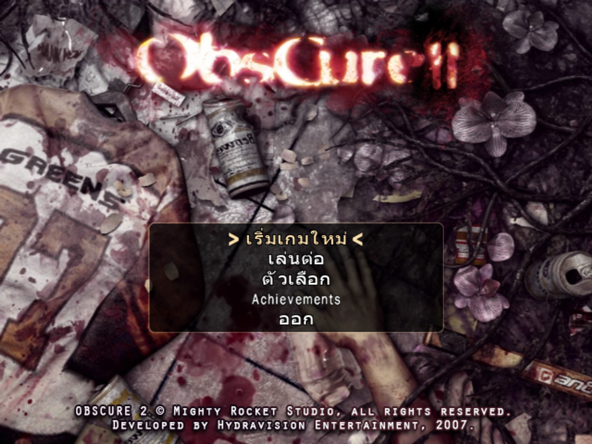
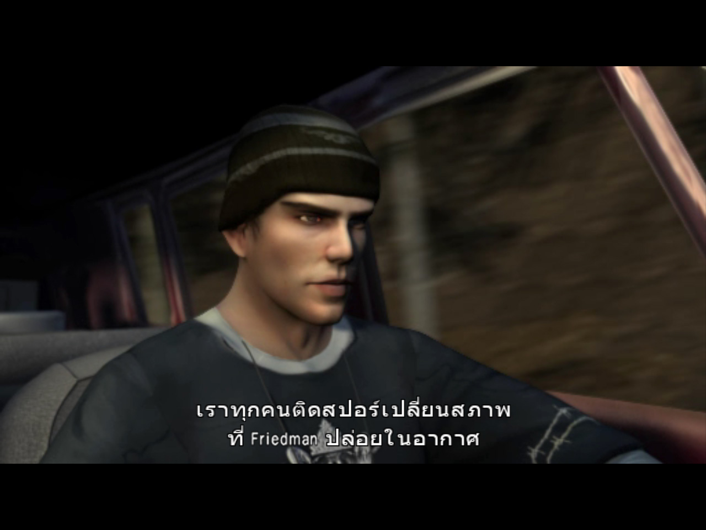
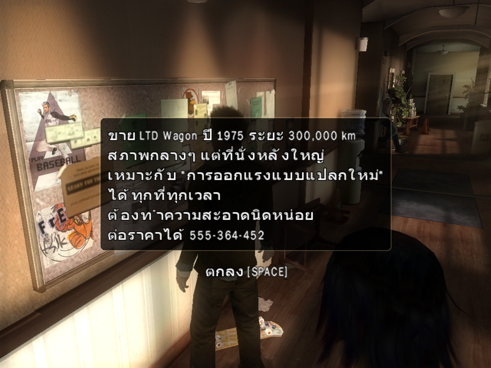

พร้อมใช้งาน
OLD GAME TO THAI
Obscure2
ม็อดภาษาไทยเกม Obscure2
แพลตฟอร์ม
PC
ภาษา
ภาษาไทย
สถานะ
พร้อมใช้งาน
เวอร์ชัน
1.0
เนื้อเรื่องย่อ
หลังเหตุการณ์จากภาคแรก เมื่อกลุ่มผู้รอดชีวิตพยายามกลับมาใช้ชีวิตตามปกติในมหาวิทยาลัย แต่ไม่นานนักพืชประหลาดและสปอร์ลึกลับก็เริ่มแพร่กระจายอีกครั้ง ทำให้นักศึกษาและผู้คนรอบตัวกลายเป็นสัตว์ประหลาดสุดสยองเหล่าวัยรุ่นจึงต้องร่วมมือกันเอาชีวิตรอด พร้อมค้นหาความจริงเบื้องหลังเชื้อประหลาดที่เชื่อมโยงกับเหตุการณ์ในอดีต
รายละเอียดการแปล
บทสนทนา
เนื้อเรื่อง
ข้อความภายในเกม
เมนูและUI
วิธีติดตั้ง
- เปิดตัวติดตั้ง Obscure2_Thai_Localization_Setup.exe
- คลิก Next แล้วเลือกโฟเดอร์เกมที่ติดตั้ง
- เลือก "ติดตั้งม็อดภาษาไทย" แล้วคลิก Next
- คลิก Intall รอโปรแกรมติดตั้งจนเสร็จ คลิก Finish
- เข้าเล่นเกมได้เลย
- *สำหรับใครที่ใช้เวอร์ชั่น Steam หรือติดตั้งไม่ได้ให้ ก็อบไฟล์ Obscure2.exe ไปทับในโฟเดอร์เกมก่อน แล้วค่อยติดตั้ง Mod
วิธีถอนการติดตั้ง
- เปิดตัวติดตั้ง Obscure2_Thai_Localization_Setup.exe
- คลิก Next แล้วเลือกโฟเดอร์เกมที่ติดตั้ง
- เลือก "ลบม็อดภาษาไทย" แล้วคลิก Next
- คลิก Intall รอโปรแกรมถอนการติดตั้งจนเสร็จ คลิก Finish
ภาพตัวอย่าง



หมายเหตุ
- แปลโดยใช้ AI
- อาจมีบางประโยคที่เป็นภาษาอังกฤษและแสดงภาษาไทยไม่ครบ
- แจกฟรีเท่านั้น ห้ามนำไปจำหน่าย